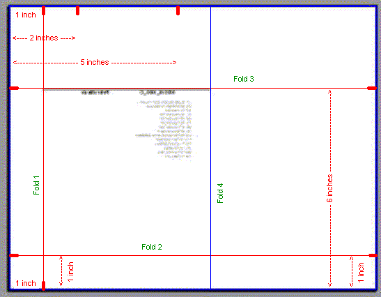
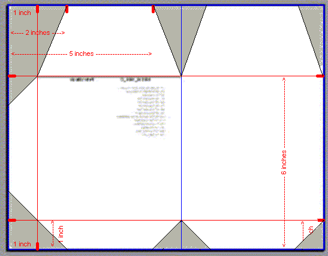
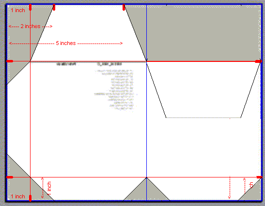

Making the envelope
These are instructions for making an mp3 disk envelope after you have printed it using the "jampal envelope" command. These instructions are designed for USA letter sized paper (8.5 inches x 11 inches). If you are using A4 they may need some modification.
Cut the index pages along the lines as shown below.
Turn the envelope page (last page) over and make marks as shown below in red. The printing on the example below will not be visible, it will be on the underside of the paper.

Place a ruler on the page along the red lines marked fold 1, fold 2, fold 3. In each case pull the paper up against the ruler to make a crease. Finally fold the right edge over to meet fold 1. This makes fold 4 (marked in blue).

Cut corners off as shown below.

Fold down the right hand flap.

Fold in the middle.

Fold over the tabs and tape them down.

Fold the index pages in half with the writing on the outside. Slide them into the envelope. Slide in the CD or DVD. The view from the front is shown below.

Fold down the top tab to close the envelope.